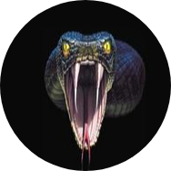

David Eduardo Miranda Araiza |
Fundador y Dierector de CodeBrosKas.com y la mera verga en el tekken 3 David Eduardo Miranda Araiza(Ensenada B.C. 4 de diciembre de 1992), mas conocido como el Madahacker, es un ingeniero y empresario mexicano de origen humilde, a financiado varios proyentos que benefician a la comunidad. Se le conoce como el "Ñoño Peligroso". Su Frase celebre "la vida cambia en breve" a sido la filosofia de vida de sus seguidores que son miles. |
🏫 Jose Maria Morelos Maneadero (Ensenada B.C)
🚩 Lazaro Cardenas No.8 Maneadero (Ensenada B.C)
🏆 Cbta No.198 Maneadero (Ensenada B.C)
📚 Actualmente cursando la UVEG en la modalidad virtual.